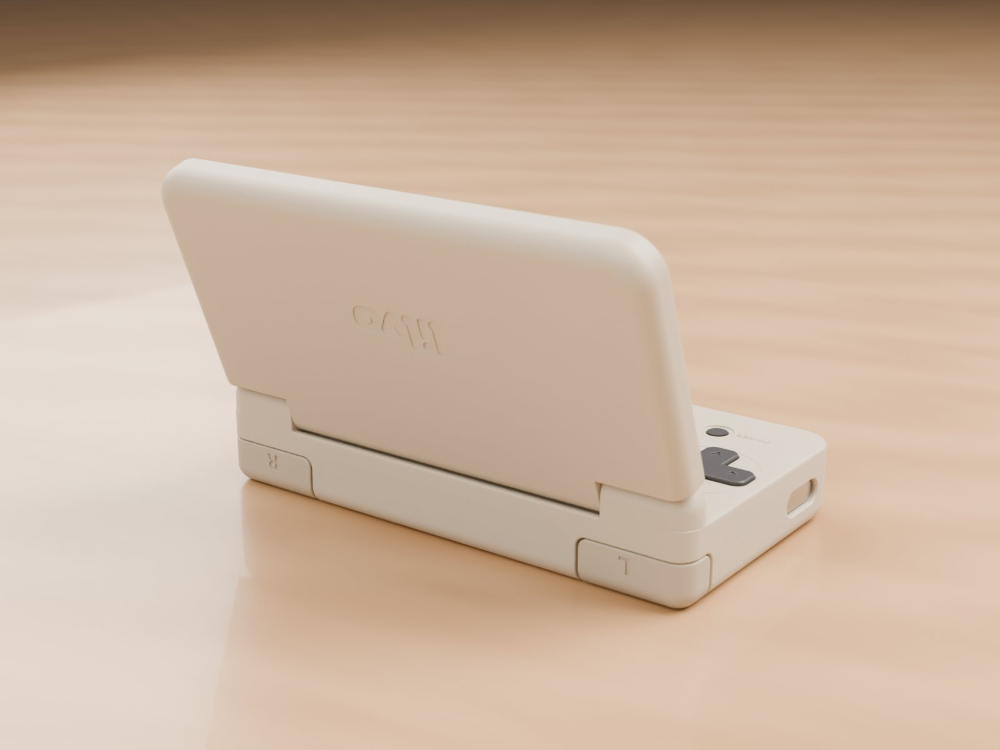

Build log / Oct 22, 2026
Ordered the Beta boards
The first boards taught me a lot. The next set is what I'm calling Beta: three boards that should be very close to a final design.

What's in the order
| Board | What it is |
|---|---|
| Main board | 6 layers, 0.8 mm thick, about 82 × 43 mm. Chip, power, buttons, both screen connectors, USB-C, headphone jack, microSD. |
| Lid board | 2 layers, 0.6 mm. Connects the top screen and speaker to the hinge cable. |
| Hinge cable | A single-layer flexible cable that winds around the hinge pin and carries the top screen's signals. |
Why 6 layers
I tried hard to stay at 4 layers. The board has to fit under the bottom screen, between the buttons, with the battery underneath, and 4 layers left the high-speed lines too cramped. Going to 6 also meant I could avoid tricky vias inside pads, which makes the boards cheaper and more reliable to assemble.
Reviewed twice
Before ordering, the design went through two independent reviews. Most comments became fixes: a thicker USB power path, an extra capacitor, better grounding near the crystal. A few became "measure it on the real board". I'd rather find out than guess.
What I'll test when they arrive
- The angle at which the lid sensor triggers.
- Touch noise while the screens and buses are busy.
- Speaker current at full volume, and how warm the hinge cable contacts get.
- The hinge cable over many open / close cycles.
- Button feel, now that every button uses the same cheaper, well-stocked switch.
Since this order, one more change: the lid sensor now also goes to the system, so it knows the lid is closing and saves before the hardware cuts power. Boards from this batch need one small resistor added by hand to match.